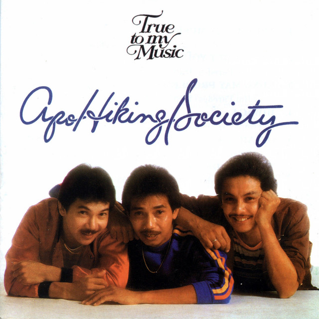
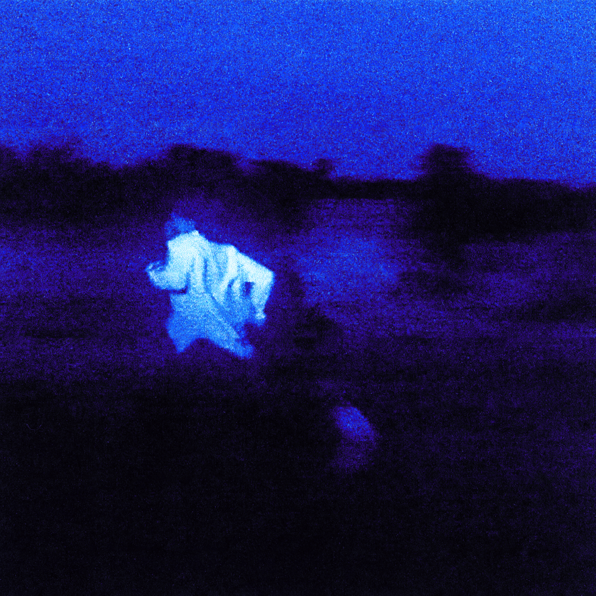
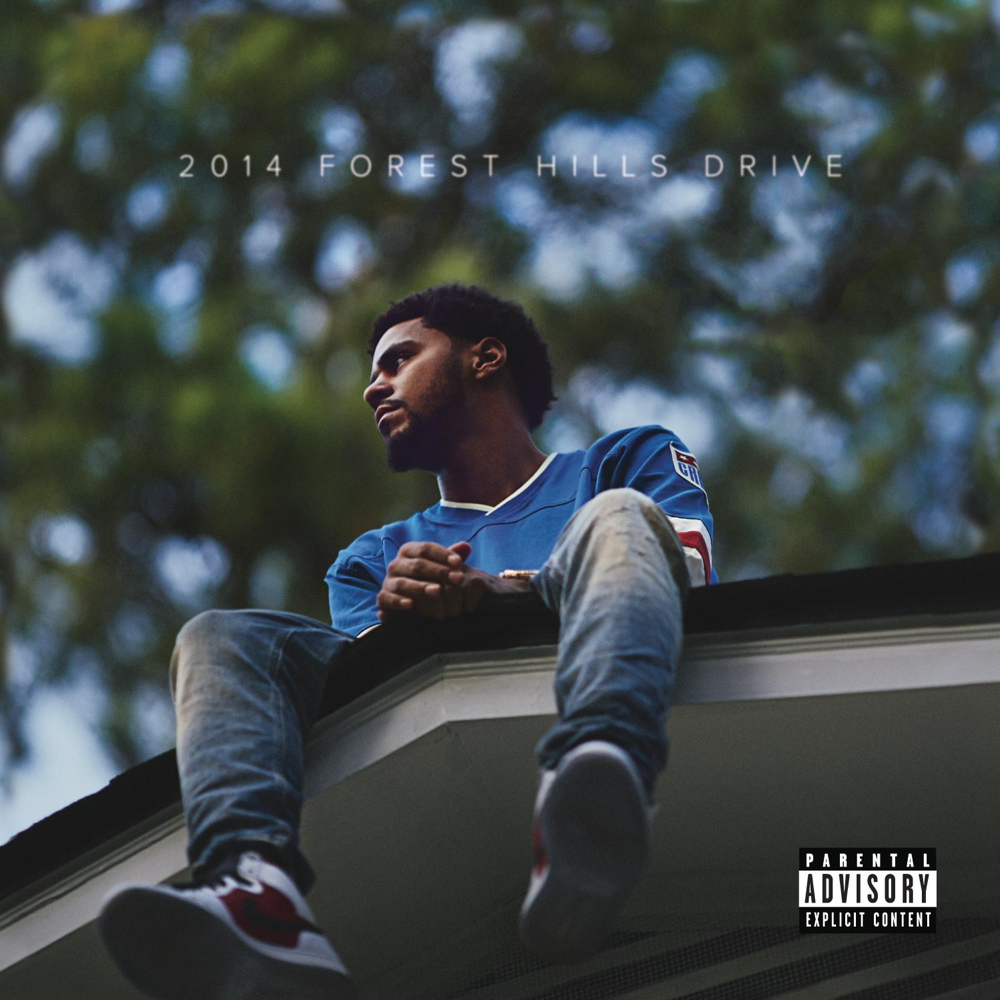
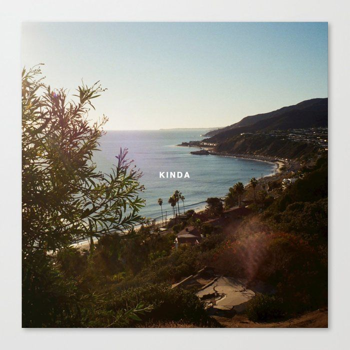
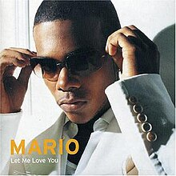
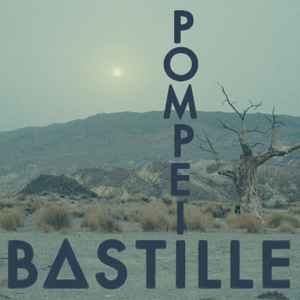

Favorite Songs
A list by: Kyle Christian Anakin Aguas
My Top 10 Favorite Songs:
- Godspeed
- Take Care
- When I met you
- Happiness
- When I was your man
- Always
- No role modelz
- Pink Skies
- Let me love you
- Pompeii
- Godspeed

- Artist: Frank Ocean
- Release Date: 2016
- Genre: R&B/Soul
- Why I chose this: "Godspeed" is celebrated for its lyrical depth, emotional authenticity,
and the powerful way it captures the complexities of love and longing. It's a testament to
Frank Ocean's artistry and his ability to create music that resonates deeply with listeners.
- Take Care

- Artist: Drake
- Release Date: November 15, 2011
- Genre: R&B/Soul, Hip-Hop/Rap
- Why I chose this:"Take Care" is celebrated for its emotional depth, memorable melody, impressive vocals, and the powerful chemistry between Drake and Rihanna. It remains a fan favorite and a significant part of both artists' musical legacies.
- When I met you

- Artist: Apo Hiking Society
- Release Date: 1983
- Genre: R&B/Soul, Pop
- Why I chose this: "When I Met You" is appreciated for its ability to capture the essence of Michael Jackson's music, evoke nostalgia, and provide fans with a new song from the iconic artist, allowing his legacy to continue in the world of music.
- Happiness

- Artist: Rex Orange County
- Release Date: 2017
- Genre: Alternative/Indie, Pop
- Why I chose this: "When I Met You" is appreciated for its ability to capture the essence of Michael Jackson's music, evoke nostalgia, and provide fans with a new song from the iconic artist, allowing his legacy to continue in the world of music.
- When I was your man

- Artist: Bruno Mars
- Release Date: 2012
- Genre: Pop music, Reggae, R&B/Soul, Pop
- Why I chose this: Bruno Mars' powerful vocals, and its relatable theme of regret and lost love. It remains a beloved and impactful song in Bruno Mars' discography.
- Always

- Artist: Daniel Ceasar
- Release Date: 2013
- Genre: R&B/Soul
- Why I chose this: "Always" is celebrated for its soulful vocals, emotional depth, and authentic portrayal of love and commitment. It is a song that has connected with listeners on a personal and emotional level, adding to its appeal and significance.
- No role modelz

- Artist: J.Cole
- Release Date: 2014
- Genre: Hip-Hop/Rap
- Why I chose this: "No Role Modelz" is celebrated for its lyrical excellence, storytelling, cultural commentary, and its role in solidifying J. Cole's position in the hip-hop industry. It remains a standout track in his discography and continues to resonate with a wide range of listeners.
- Pink Skies

- Artist: LANY
- Release Date: 2017
- Genre: Alternative/Indie
- Why I chose this: "Pink Skies" is appreciated for its catchy melody, positive message, and the sense of joy and optimism it brings to its listeners. It's a song that encourages a lighthearted and carefree mood, making it a favorite for many fans of LANY and pop music in general.
- Let me love you

- Artist: Mario
- Release Date: 2004
- Genre: R&B/Soul
- Why I chose this: "Let Me Love You" is celebrated for its memorable melody, Mario's exceptional vocals, and its enduring appeal as a classic R&B and pop ballad. It remains a fan favorite and a significant part of Mario's musical legacy.
- Pompeii

- Artist: Bastille
- Release Date: 2013
- Genre: Alternative rock, Alternative/Indie, Synth-pop
- Why I chose this: "Pompeii" is celebrated for its catchy melody, meaningful lyrics, and the way it combines upbeat music with introspective themes. It remains a favorite among fans of indie rock and alternative music and has solidified its place as one of Bastille's signature songs.